정보처리산업기사 (2015-08-16 기출문제)
1과목: 데이터 베이스
1. E-R 다이어그램에서 개체를 의미하는 기호는?
- 사각형
- 오각형
- 삼각형
- 타원
(정답률: 85%)

2. 데이터 모델의 종류 중 오너-멤버(owner-member) 관계를 갖는 것은?
- 뷰 데이터 모델
- 계층 데이터 모델
- 관계 데이터 모델
- 네트워크 데이터 모델
(정답률: 72%)
3. 데이터베이스 설계 순서를 바르게 나열한 것은?
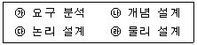
- 가 → 나 → 다 → 라
- 가 → 다 → 나 → 라
- 다 → 나 → 라 → 가
- 다 → 라 → 나 → 가
(정답률: 85%)
4. DBA의 역할로 거리가 먼 것은?
- 예비, 회복 절차를 수립해야 한다.
- 저장구조와 접근방법을 선정해야 한다.
- 데이터의 종속성을 지속적으로 유지해야 한다.
- 사용자의 요구와 불편을 해결해야 한다.
(정답률: 58%)
5. 자료구조를 선형구조와 비선형구조로 구분할 경우 나머지 셋과 성격이 다른 하나는?
- 스택
- 트리
- 큐
- 배열
(정답률: 84%)
6. 이진탐색(Binary Search)시 전제조건으로 가장 중요한 것은?
- 자료의 개수가 항상 짝수이어야 한다.
- 자료의 개수가 항상 홀수이어야 한다.
- 자료가 순차적으로 정렬되어 있어야 한다.
- 자료가 모두 정수로만 구성되어야 한다.
(정답률: 79%)
7. 다음 트리를 Post-order로 운행할 때 노드 "E"는 몇 번째로 검사되는가?
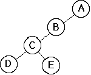
- 1
- 2
- 3
- 4
(정답률: 71%)
8. 다음 설명에 해당되는 것은?
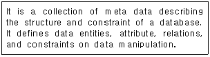
- DBMS
- Schema
- Key
- DataWare House
(정답률: 72%)
9. 다음은 무엇에 대한 설명인가?
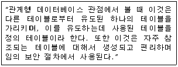
- Catalog
- View
- SQL
- Schema
(정답률: 73%)
10. 데이터베이스의 정의로 옳지 않은 것은?
- 컴퓨터가 접근할 수 있는 저장 매체에 저장된 자료이다.
- 조직의 존재 목적이나 유용성 면에서 존재가치가 확실한 필수적 데이터이다.
- 여러 응용 시스템들이 공동으로 소유하고 유지하는 자료이다.
- 자료의 중복을 근거로 한 데이터의 집합이다.
(정답률: 79%)
11. What is the properties of relations incorrectly?
- There are duplicate tuples.
- Tuples are unordered.
- Attributes are unordered.
- All attribute values are atomic.
(정답률: 50%)
12. 릴레이션에서 튜플의 수를 의미하는 것은?
- DEGREE
- SYNONYM
- COLLISION
- CARDINALITY
(정답률: 78%)
13. 다음과 같은 그래프에서 간선의 개수는?
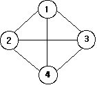
- 2개
- 4개
- 6개
- 8개
(정답률: 81%)
14. 다음과 같은 응용 분야에 가장 적합한 자료 구조는?
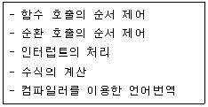
- 스택
- 큐
- 데크
- 트리
(정답률: 66%)
15. 정규화 하는 프로젝션 과정 중 부분함수 종속제거는 어느 단계에 해당하는가?
- 비정규 릴레이션 → 1NF
- 1NF → 2NF
- 2NF → 3NF
- 3NF → BCNF
(정답률: 74%)
16. 버블 정렬을 이용한 오름차순 정렬시 다음 자료에 대한 3회전 후의 결과는?
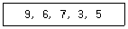
- 3, 5, 6, 7, 9
- 6, 3, 5, 7, 9
- 6, 7, 3, 5, 9
- 9, 7, 6, 5, 3
(정답률: 75%)
17. SQL 명령 중 DML에 해당하는 것으로만 짝지어진 것은?
- CREATE, ALTER, DROP
- CREATE, ALTER, SELECT
- CREATE, UPDATE, DROP
- DELETE, UPDATE, SELECT
(정답률: 65%)
18. 뷰(View)의 삭제시 사용되는 SQL 명령은?
- DELETE
- DROP
- OUT
- CLEAR
(정답률: 82%)
19. 트랜잭션의 특성에 해당하지 않는 것은?
- DURABILITY
- CONSISTENCY
- ATOMICITY
- INTEGRITY
(정답률: 52%)
20. 참조 무결성 제약조건에 관한 다음 설명의 괄호 안 내용으로 옳은 것은?
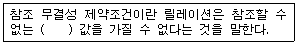
- 기본 키
- 복합 키
- 후보 키
- 외래 키
(정답률: 63%)
2과목: 전자 계산기 구조
21. 그림과 같은 전가산기(Full Adder)의 압력이 A=1, B=0, C=1일 때 출력 So(합)와 Co(캐리)는?
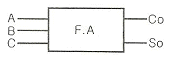
- Co = 0, So = 0
- Co = 0, So = 1
- Co = 1, So = 0
- Co = 1, So = 1
(정답률: 53%)
22. 동기 가변식 마이크로 사이클 타임에 관한 설명으로 틀린 것은?
- 제어기의 구현은 고정식에 비해 복잡하다.
- 수행시간이 현저한 차이를 낼 때 사용한다.
- 동기를 맞추기 위해 각 그룹 간 마이크로 사이클 타임을 고정 값이 되게 한다.
- 고정식에 비해 CPU 시간 낭비를 줄일 수 있다.
(정답률: 58%)
23. 마이크로오퍼레이션에서 명령(instruction)이 실행되기 위해 가장 먼저 이루어지는 동작은?
- 유효 주소 계산
- 명령어 패치(instruction fetch)
- 오퍼랜드 패치(operand fetch)
- 주소 페치(Address fetch)
(정답률: 43%)
24. 명령 코드의 비트는 필드라고 불리는 몇 개의 그룹으로 나누어진다. 그 중 모드 필드(mode field)에 대한 설명으로 옳은 것은?
- 오퍼랜드나 유효 번지가 결정되는 방법을 나타낸다.
- 메모리나 레지스터를 지정하는 방법을 나타낸다.
- 수행하여야 할 동작을 나타낸다.
- 명령을 수행하도록 제어 함수를 제공하는 방법을 나타낸다.
(정답률: 40%)
25. 다음 주소 지정 방식 중 속도가 가장 빠른 방식은?
- Direct Addressing
- Immediate Addressing
- Indirect Addressing
- Calculate Addressing
(정답률: 43%)
26. 프로세서와 주기억장치간의 작동속도 불균형을 해소하기 위한 기억장치에 속하지 않는 것은?
- 캐시 기억장치(cache memory)
- 인터리브된 기억장치(interleaved memory)
- 자기 버블 기억장치(magnetic bubble memory)
- 내용 지정 기억장치(content addressable memory)
(정답률: 43%)
27. A=01010101, B=10101010 일 때 A와 B의 불 곱(boolean product)은?
- 00000000
- 01010101
- 10101010
- 11111111
(정답률: 59%)
28. 입·출력 제어방식에 해당하지 않는 것은?
- CPU에 의한 방식
- DMA 방식
- Buffer에 의한 방식
- 채널 제어기에 의한 방식
(정답률: 42%)
29. 산술연산과 논리연산 동작을 수행한 후 결과를 축적하는 레지스터는?
- 누산기
- 인덱스 레지스터
- 플래그 레지스터
- RAM
(정답률: 74%)
30. 다음 중 시스템 버스에 속하지 않는 것은?
- 제어 버스
- 데이터 버스
- 입출력 버스
- 주소 버스
(정답률: 39%)
31. 인터럽트 처리에 대한 설명 중 틀린 것은?
- 인터럽트의 원인에 따라 해당 인터럽트 처리루틴이 실행된다.
- 인터럽트가 발생하면 레지스터의 상태를 보관해야 한다.
- 인터럽트 요청은 중앙처리장치로부터 시작된다.
- 인터럽트 처리 중 우선순위가 높은 인터럽트 처리도 가능하다.
(정답률: 57%)
32. 오류(error) 정보를 검출하기 위해 사용하는 비트는?
- sign bit
- parity bit
- check bit
- code bit
(정답률: 74%)
33. 다음 중 CISC(Complex Instruction Set computer)형 프로세서의 특징이 아닌 것은?
- 명령어의 길이가 일정하다.
- 많은 수의 명령어를 갖는다.
- 다양한 주소 모드를 지원한다.
- 레지스터와 메모리의 다양한 명령어를 제공한다.
(정답률: 67%)
34. 제어장치의 구성 요소가 아닌 것은?
- 명령어 인출기
- 명령어 해독기
- 제어 메모리
- 순서 제어 논리장치
(정답률: 36%)
35. 비동기 데이터전송방식의 하나로서 데이터 전송 시 송신측과 수신측에서 송신과 수신의 제어신호를 사용하여 서로의 동작을 확인하면서 데이터를 전송하는 방식은?
- IOP
- DMA
- 스트로브(storbe) 제어
- Handshaking
(정답률: 57%)
36. op-code가 8비트일 때 생성될 수 있는 명령어의 수는?
- 27-1
- 27
- 28
- 28-1
(정답률: 55%)
37. 메모리의 내용을 어드레스 할 수 있는 메모리는?
- associative memory
- ROM
- RAM
- virtual memory
(정답률: 47%)
38. 다음 중 가상기억장치에 대한 설명으로 옳지 않은 것은?
- 보조기억장치와 같이 기억 용량이 큰 기억장치를 마치 주기억장치처럼 사용하는 개념이다.
- 프로그래머에 의해 쓰여진 주소를 가상 주소(virtual address)라 한다.
- 주기억장치의 주소를 물리적 주소(physical address)라 한다.
- 물리적 주소를 주소 공간(address space)이라 한다.
(정답률: 45%)
39. 이항연산자가 아닌 것은?
- OR
- AND
- XOR
- Complement
(정답률: 75%)
40. 광디스크(Optical disc)의 종류에 해당하지 않는 것은?
- Solid State Disc
- Blu-ray Disc
- DVD
- Compact Disc
(정답률: 51%)
3과목: 시스템분석설계
41. 자료 흐름도의 구성 요소 중 시스템에서의 처리요소를 자료변환의 관점에서 표시하여 처리요소 데이터에 대한 연산을 내용으로 하며, 원으로 표시하는 것은?
- process
- data flow
- terminator
- data store
(정답률: 59%)
42. 객체 지향 설계에서 “information hiding”을 가능하게 해주는 가장 핵심적인 개념은?
- encapsulation
- abstraction
- inheritance
- polymorphism
(정답률: 55%)
43. 시스템의 특성 중 항상 관련된 다른 시스템과 상호 의존 관계로 통합되는 특성을 의미하는 것은?
- 종합성
- 제어성
- 자동성
- 목적성
(정답률: 72%)
44. 체크 시스템의 종류 중 데이터를 처리하기 전에 입력 자료의 내용을 체크하는 방법으로 사전에 주어진 체크 프로그램에 의해서 정량적인 데이터가 미리 정해 놓은 규정된 범위 내에 존재하는가를 체크하는 것은?
- Limit check
- Format check
- Matching check
- Balance check
(정답률: 63%)
45. 코드 설계시 주의 사항으로 거리가 먼 것은?
- 코드 추가가 가능하지 않도록 설계한다.
- 컴퓨터 처리에 적합하도록 설계한다.
- 사용자가 취급하기 쉽도록 설계한다.
- 체계성이 있도록 설계한다.
(정답률: 75%)
46. 입력 설계 단계 중 수집 담당자, 수집 방법과 경로, 수집 주기와 시기, 수집시의 오류 검사 방법과 관계되는 것은?
- 입력 정보 매체화 설계
- 입력 정보 투입 설계
- 입력 정보 내용 설계
- 입력 정보 수집 설계
(정답률: 69%)
47. 입력 설계 단계 중 입력정보 매체화 설계시 고려사항이 아닌 것은?
- 매체화 담당자 및 장소
- 레코드 길이 및 형식
- 입력 항목의 배열 순서 및 항목명
- 매체화시의 오류체크방법
(정답률: 38%)
48. 표준 처리 패턴 중 특정의 조건을 제시하여 그 조건에 부합되는 데이터를 추출해내는 처리는?
- Distribution
- Extract
- Collate
- Generate
(정답률: 57%)
49. 시스템에 대한 설명으로 거리가 먼 것은?
- 데이터 처리 시스템에서 규정, 수단, 순서, 방법, 루틴, 장치 등이 하나의 목적 하에 결합되어 그 사이에 존재하는 상호작용이 정해진 방법에 따라 조정되는 것이다.
- 상호 관련성이 없는 구성 요소를 조합하여 각각의 목적달성을 위하여 조직한 임시적 결합체이다.
- 어떤 목적 또는 목표를 위하여 여러 기능 요소가 상호 관련하여 결합된 절차나 방법의 유기적 집합체이다.
- 컴퓨터 시스템은 중앙처리장치, 기억장치, 각종 입출력장치, 통신 회선 등의 유기적인 결합체이다.
(정답률: 69%)
50. 파일 설계 순서로 옳은 것은?
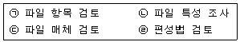
- (ㄱ) → (ㄴ) → (ㄷ) → (ㄹ)
- (ㄱ) → (ㄷ) → (ㄴ) → (ㄹ)
- (ㄹ) → (ㄱ) → (ㄷ) → (ㄴ)
- (ㄹ) → (ㄷ) → (ㄴ) → (ㄱ)
(정답률: 62%)
51. 모듈 설계시 유의사항으로 거리가 먼 것은?
- 적절한 크기로 설계한다.
- 보기 쉽고 이해하기 쉬워야 한다.
- 모듈은 다른 곳에서 재사용 할 수 있도록 표준화한다.
- 자료 추상화와 정보은닉의 성격은 배제한다.
(정답률: 70%)
52. 시스템 평가(System test)의 종류 중 다음 항목과 관계 되는 것은?
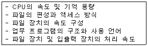
- 기능 평가
- 가격 평가
- 신뢰성 평가
- 성능 평가
(정답률: 61%)
53. 문서화(Documentation)의 목적에 대한 설명으로 거리가 먼 것은?
- 시스템 개발 중 추가 변경에 따른 혼란 방지
- 시스템 개발 절차에 대한 요식 행위
- 개발 후 시스템 유지보수의 용이
- 시스템의 개발 요령과 순서를 표준화하여 효율적인 작업 도모
(정답률: 73%)
54. 색인순차편성(ISAM) 파일에 대한 특징이 아닌 것은?
- 순차처리와 임의처리가 모두 가능하다.
- 레코드의 추가 삭제시 파일 전체를 복사할 필요가 없다.
- 어느 특정 레코드 접근시 인덱스에 의한 처리로 직접 편성 파일에 비해서 접근 시간이 빠르다.
- 오버플로우 되는 레코드가 많아지면 사용 중에 파일을 재편성하는 문제점이 발생된다.
(정답률: 31%)
55. 다음과 같은 코드 부여 방법의 종류는?
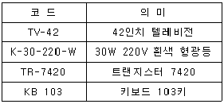
- Group Classification Code
- Block Code
- Letter Type Code
- Mnemonic Code
(정답률: 57%)
56. 다음은 어떤 종류의 코드 오류(error)인가?
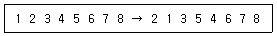
- Transcription error
- Transposition error
- Double Transposition error
- Random error
(정답률: 47%)
57. 급여관리 등과 같이 변동 상황이 크지 않고 기간별로 일괄처리(Batch Processing)를 주로 하는 경우에 적합한 파일의 종류는?
- Indexed Sequential File
- Random File
- Inverted File
- Sequential File
(정답률: 47%)
58. 프로세스 설계시 유의 사항으로 거리가 먼 것은?
- 프로세스 전개의 사상을 통일한다.
- 분류 처리는 가능한 최대화한다.
- 하드웨어의 기기 구성, 처리 성능을 고려한다.
- 운영체제를 중심으로 한 소프트웨어의 효율성을 고려한다.
(정답률: 65%)
59. 두 모듈이 동일한 자료구조를 조회하는 경우의 결합도이며, 자료구조의 어떠한 변화 즉 포맷이나 구조의 변화는 그것을 조회하는 모든 모듈 및 변화되는 필드를 실제로 조회하지 않는 모듈에도 영향을 미치게 되는 것은?
- 자료 결합도
- 스템프 결합도
- 제어 결합도
- 외부 결합도
(정답률: 46%)
60. 출력 설계 단계 중 출력 정보 이용 설계시 검토사항으로 옳지 않은 것은?
- 이용자 및 이용 경로
- 기밀 보호 여부
- 보존 기간
- 분배 책임자
(정답률: 57%)
4과목: 운영체제
61. 디스크에 헤드가 53 트랙을 처리하고 50 트랙으로 이동해 왔다. SCAN 방식을 사용할 경우, 다음 디스크 큐에서 가장 먼저 처리되는 트랙은?(단, 가장 안쪽 트랙 0, 가장 바깥쪽 트랙 200)
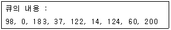
- 0
- 37
- 60
- 200
(정답률: 45%)
62. HRN(Highest Response-Ratio Next) 스케줄링 기법에서 가변적 우선 순위는 다음 식으로 계산된다. (ㄱ)에 알맞은 내용은?
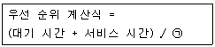
- 대기 시간
- (대기 시간 - 서비스 시간)
- 서비스 시간
- (서비스 시간 - 대기 시간)
(정답률: 71%)
63. UNIX 시스템의 쉘(shell)에 관한 설명으로 옳지 않은 것은?
- 사용자가 입력시킨 명령어 라인을 읽어 필요한 시스템 기능을 실행시키는 명렁어 해석기이다.
- 시스템과 사용자 간의 인터페이스를 제공한다.
- 공용 쉘이나 사용자 자신이 만든 쉘을 사용할 수 있다.
- 쉘은 커널의 일부분으로 메모리에 상주하면서 사용자와 시스템 간의 대화를 가능케 해준다.
(정답률: 44%)
64. 임계 구역(Critical Section)에 대한 설명으로 옳지 않은 것은?
- 임계 구역에서 프로세스 수행은 가능한 빨리 끝내야 한다.
- 프로세스가 일정 시간 동안 자주 참조하는 페이지의 집합을 임계 구역이라고 한다.
- 임계 구역에서는 프로세스가 무한 루프에 빠지지 않도록 해야 한다.
- 임계 구역에서는 프로세스들이 하나씩 순차적으로 처리되어야 한다.
(정답률: 64%)
65. 분산처리 운영 시스템에 대한 설명으로 옳지 않은 것은?
- 사용자는 각 컴퓨터의 위치를 몰라도 자원 사용이 가능하다.
- 시스템의 점진적 확장이 용이하다.
- 중앙 집중형 시스템에 비해 시스템 설계가 간단하고 소프트웨어 개발이 쉽다.
- 연산속도, 신뢰성, 사용 가능도가 향상된다.
(정답률: 62%)
66. 병행 프로세스의 상호배제 구현 기법으로 거리가 먼 것은?
- 데커 알고리즘
- 피터슨 알고리즘
- Test_And_Set 명령어 기법
- 은행원 알고리즘
(정답률: 60%)
67. RR(Round Robin) 방식에 관한 설명으로 옳지 않은 것은?
- 시분할 시스템을 위해 고안된 방식이다.
- 시간 할당량이 클 경우 FCFS 기법과 같아지고, 시간 할당량이 작을 경우 문맥 교환 및 오버헤드가 자주 발생될 수 있다.
- 시스템이 사용자에게 적합한 응답시간을 제공해주는 대화식 시스템에 유용하다.
- 프로세스에게 이미 할당된 프로세서를 강제로 빼앗을 수 없고, 그 프로세스의 사용이 종료된 후에 스케줄링 해야 하는 방법을 택하고 있다.
(정답률: 52%)
68. 사용자의 신원을 운영체제가 확인하는 절차를 통해 불법 침입자로부터 시스템을 보호하는 보안 유지 방식은?
- 외부 보안
- 운용 보안
- 사용자 인터페이스 보안
- 내부 보안
(정답률: 50%)
69. 자원보호 기법 중 접근 제어 행렬을 구성하는 요소가 아닌 것은?
- 영역
- 객체
- 권한
- 시간
(정답률: 58%)
70. SJF(Shortest Job First) 스케줄링에서 작업 도착 시간과 CPU 사용시간은 다음 표와 같다. 모든 작업들의 평균 대기 시간은 얼마인가?
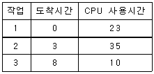
- 15
- 17
- 24
- 25
(정답률: 57%)
71. 운영체제의 역할로 거리가 먼 것은?
- 사용자와의 인터페이스 구현
- 프로세서, 메모리 등의 자원 스케줄링
- 목적 프로그램과 로드 모듈의 연결
- 입, 출력을 위한 편의 제공
(정답률: 52%)
72. 운영체제의 목적으로 옳지 않은 것은?
- 신뢰성 향상
- 사용자 인터페이스 제공
- 처리량의 향상
- 응답시간 증가
(정답률: 75%)
73. 다음 설명에 해당되는 디렉토리 구조는?
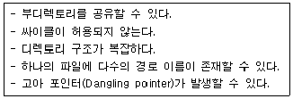
- 2단계 디렉토리
- 비순환 그래프 디렉토리
- 트리 구조 디렉토리
- 일반 그래프 디렉토리
(정답률: 49%)
74. 프로세스의 정의로 거리가 먼 것은?
- 동기적 행위를 일으키는 주체
- 실행 중인 프로그램
- 프로시저가 활동 중인 것
- 프로세스 제어 블록의 존재로서 명시되는 것
(정답률: 59%)
75. 다음과 같이 주기억장치의 공백이 있다고 할 때, Best Fit 배치 방법은 13K 크기의 프로그램을 어느 영역에 할당하는가?
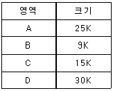
- A
- B
- C
- D
(정답률: 74%)
76. 페이지 교체 기법 중 시간 오버헤드를 줄이는 기법으로서 참조 비트(referenced bit)와 변형 비트(modified bit)를 필요로 하는 방법은?
- FIFO
- LRU
- LFU
- NUR
(정답률: 58%)
77. UNIX에 대한 설명으로 옳지 않은 것은?
- 다중 작업(multi-tasking)을 지원하지 않는다.
- 대화식 시분할 운영체제이다.
- 두 사람 이상의 사용자가 동시에 시스템을 사용할 수 있다.
- 대부분 C 언어로 구성되어 있다.
(정답률: 61%)
78. 16개의 CPU로 구성된 하이퍼큐브에서 각 CPU는 몇 개의 연결점을 갖는가?
- 2
- 4
- 128
- 256
(정답률: 59%)
79. 동시에 여러 개의 작업이 수행되는 다중 프로그래밍 시스템 또는 가상기억장치를 사용하는 시스템에서 하나의 프로세스가 작업 수행 과정에서 수행하는 기억장치 접근에서 지나치게 페이지 폴트가 발생하여 전체 시스템의 성능이 저하되는 것을 무엇이라고 하는가?
- Spooling
- Interleaving
- Swapping
- Thrashing
(정답률: 64%)
80. 3페이지가 들어 갈 수 있는 기억장치에서 다음과 같은 순서로 페이지가 참조될 때 LRU 기법을 사용하면 최종적으로 기억공간에 남는 페이지는?(단, 현재 기억장치는 모두 비어있다고 가정한다.)
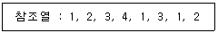
- 2, 1, 3
- 1, 2, 4
- 2, 3, 4
- 1, 3, 4
(정답률: 48%)
5과목: 정보통신개론
81. 다음 중 광통신 시스템에서 광 검출기로 적합한 것은?
- LD(Laser Diode)
- LED(Light Emitting Diode)
- ZE(Zender Diode)
- APD(Avalanche Photo Diode)
(정답률: 31%)
82. 프로토콜 전송방식 중 특정한 플래그를 메시지의 처음과 끝에 포함시켜 전송하는 방식은?
- 비트 방식
- 문자 방식
- 바이트 방식
- 워드 방식
(정답률: 45%)
83. HDLC 프레임 구조 중 주소영역에서 모든 스테이션에게 프레임을 전송하기 위한 값으로 맞는 것은?
- 00000000
- 00001111
- 11110000
- 11111111
(정답률: 61%)
84. 정보통신 시스템 상에서 정보 전송을 담당하는 장치로 가장 거리가 먼 것은?
- DTE
- DSU
- CPU
- CCU
(정답률: 58%)
85. HDLC는 링크 구성 방식에 따라 세 가지의 동작 모드를 가지고 있다. 이에 해당하지 않는 것은?
- SBM
- NRM
- ARM
- ABM
(정답률: 46%)
86. 전송 에러제어 방식에서 에러검출과 거리가 먼 것은?
- 패리티검사
- 해밍 코드
- CRC
- 아스키 코드
(정답률: 64%)
87. 데이터 프레임을 연속적으로 전송해 나가다가 NAK를 수신하게 되면 오류가 발생한 프레임 이후에 전송된 모든 데이터 프레임을 재전송하는 오류제어 방식은?
- Go-back-N ARQ
- Selective-Repeat ARQ
- Stop-and-Wait ARQ
- Forward Error Connection
(정답률: 68%)
88. LAN에서 사용되는 매체 액세스 제어 기법과 관련이 없는 것은?
- TOKEN-BUS
- FDMA
- CSMA/CD
- TOKEN-RING
(정답률: 59%)
89. 전송시간을 일정한 간격의 시간 슬롯(time slot)으로 나누고, 이를 주기적으로 각 채널에 할당하는 다중화 방식은?
- 주파수 분할 다중화
- 파장 분할 다중화
- 통계적 시분할 다중화
- 동기식 시분할 다중화
(정답률: 63%)
90. 양방향으로 데이터 전송이 가능하나, 한 순간에는 한쪽 방향으로만 전송이 이루어지는 방식은?
- 단방향방식
- 반이중방식
- 양방향방식
- 전이중방식
(정답률: 72%)
91. 전송 신호에 발생되는 잡음(noise) 중 번개나 통신시스템 장애 등에 의해 순간적으로 큰 에너지를 갖는 잡음(noise)은?
- 열 잡음
- 충격성 잡음
- 상호변조 잡음
- 누화 잡음
(정답률: 67%)
92. 프로토콜의 구성 요소 중 오류제어, 동기 및 흐름제어 등의 각종 제어 절차에 관한 정의는?
- 구문(Syntax)
- 의미(Semantics)
- 타이밍(Timing)
- 코딩(Cording)
(정답률: 29%)
93. 다음 중 회선교환(Circuit Switching) 방식의 특징에 해당하는 것은?
- 고정된 대역폭 전송방식이다.
- 축적 후 전송방식에 해당한다.
- 패킷을 이용한 전송방식이다.
- 호출된 자국이 교신 중일 때 busy 신호가 없다.
(정답률: 46%)
94. LAN의 네트워크 형상(Topology)의 종류에 속하지 않는 것은?
- 트리형
- 버스형
- 링형
- 교환형
(정답률: 67%)
95. 뉴미디어의 특징과 가장 거리가 먼 것은?
- 단방향성
- 네트워크화
- 분산적
- 특정 다수자
(정답률: 67%)
96. 아날로그 데이터를 전송하기 위해 디지털 형태로 변환하고 또 이러한 디지털 형태를 원래의 아날로그 데이터로 복구시키는 것은?
- CCU
- DSU
- CODEC
- DTE
(정답률: 55%)
97. 정보통신시스템의 데이터 전송계에 해당되지 않는 것은?
- 데이터 전송회선
- 단말장치
- 주변장치
- 통신제어장치
(정답률: 56%)
98. OSI-7 계층 중 통신망을 통하여 패킷을 목적지까지 전달 담당을 하는 계층은?
- 데이터 링크 계층
- 네트워크 계층
- 물리 계층
- 세션 계층
(정답률: 55%)
99. 통화 중에 이동전화가 한 셀에서 다른 셀로 이동할 때 자동으로 다른 셀의 통화 채널로 전환해 줌으로써 통화가 지속되게 하는 기능은?
- 핸드오프
- 핸드쉐이크
- 셀의 분할
- 페이딩
(정답률: 58%)
100. 데이터 교환방식 중 데이터를 패킷단위로 전송하는 것은?
- 회선교환
- 메시지교환
- 패킷교환
- 축적교환
(정답률: 73%)